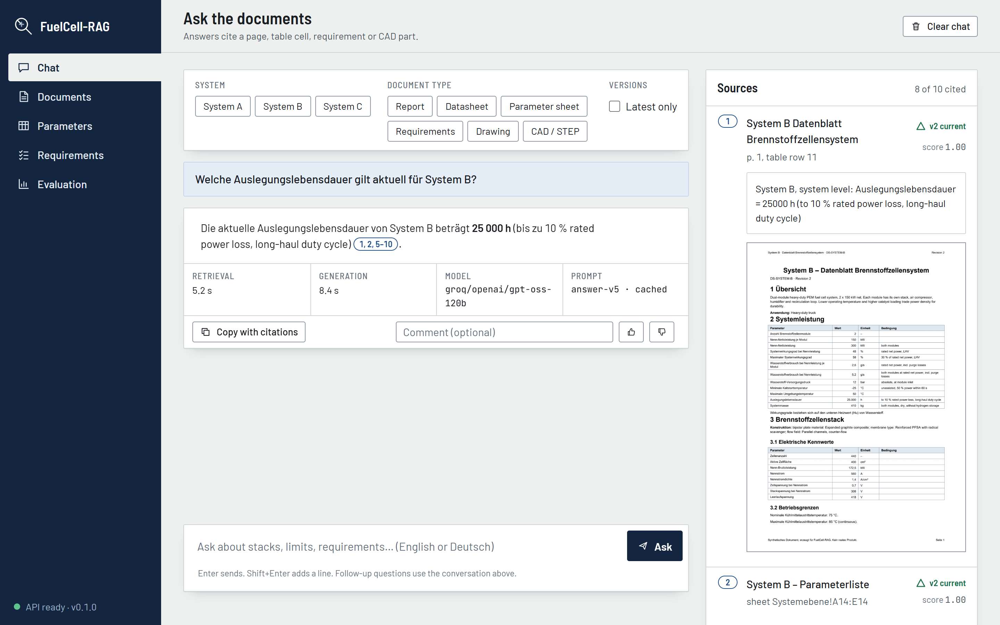

Engineers who develop fuel cell systems work with datasheets, parameter spreadsheets, requirement specifications, CAD assemblies, drawings and public reports, in German and English, in several versions. A wrong value or a superseded document costs time or causes errors. This report describes FuelCell-RAG, a system that answers questions about such documents and cites a page, table cell, requirement ID or CAD part for every claim. The system combines layout-aware parsing, hybrid dense and sparse retrieval, a cross-encoder reranker, a calibrated “not found” decision, and a language model constrained to numbered sources. It is evaluated on a 70-question golden set with exact gold sources, recorded by the document generators. On a corpus of 196 documents, retrieval recall@5 is 0.921, value accuracy 0.927, citation precision 0.956, and claim-level faithfulness 0.918. All three planted prompt-injection attacks are resisted. At ten simultaneous users, retrieval has a 95th-percentile latency of 4.9 s. The report states what was measured, how, and where the system still fails.
A fuel cell system is described by many documents that must agree with each other: the datasheet states a design lifetime, the parameter sheet repeats it, a requirement specification demands it, and a drawing shows the components that deliver it. Documents are revised, so several versions exist, and some are German, some English. An engineer who asks “what design lifetime applies to System B today?” needs the current value, the document it comes from, and proof that the answer was not invented.
Retrieval-augmented generation (RAG) is the usual approach: find relevant passages, then let a language model write an answer from them. A demonstration is easy; a system an engineer can rely on is not. The work described here therefore concentrates on three things:
All data is public or synthetic. No confidential engineering document was used.
Evaluating retrieval needs labels: for each question, which page or cell holds the answer. Labelling real documents by hand does not scale, and the labels break when documents are revised. The project therefore defines three fictional PEM fuel cell systems once, in YAML files, and generates documents from this single truth (Table 1).
| System | Application | Rated net power |
|---|---|---|
| A | Passenger car | 80 kW |
| B | Heavy-duty truck (two modules) | 2 × 150 kW |
| C | Stationary combined heat and power | 100 kW |
Unit tests check the physics of the truth (stack voltage = cells × cell voltage, power = voltage × current, hydrogen flow from Faraday's law, efficiency from the lower heating value). Generators then write system and component datasheets (PDF, German and English), parameter sheets (Excel), requirement specifications (ReqIF, DOCX, CSV), STEP assemblies, and drawings. They add the imperfections found in real documents: unit variants, two document versions with changed values, hidden obsolete rows, merged headers, links between requirements written only in prose, and one requirement per system that deliberately contradicts the parameter sheet. While writing each value, a generator records where it appears (page, sheet and cells, requirement ID). These records, the facts, become the gold sources of the golden set, so the labels stay exact when documents are regenerated.
Synthetic documents are cleaner than real ones. To keep the evaluation honest, the corpus also contains 204 public documents (reports and presentations from the US Department of Energy, NREL, and open-access arXiv papers). Their licences are listed in the repository; the PDFs themselves are never committed. The 12 public-document questions were written by hand and checked against the PDFs. Table 2 gives the corpus.
| Part | Documents | Content |
|---|---|---|
| Public, curated | 33 | DOE programme records, NREL reports, technical targets |
| Public, discovered | 171 | OSTI and arXiv reports and papers, DOE Hydrogen Programme records |
| Generated | 50 | Datasheets, parameter sheets, requirements, schematics, STEP, three planted injection notes |
| Total | 254 | The original plan asked for at least 300 |
The pipeline is written as small, typed Python functions, one module per stage, with libraries used for single components only (ADR 0001). The reason is that each stage must be measured, traced and switched by configuration for the ablation runs; a framework pipeline hides these steps. Figure 1 shows the two halves of the system.
Discovery and registry. Every file is hashed (SHA-256) and registered in Postgres with a status. Only new or changed files are processed; failures are kept with their error and can be quarantined.
Parsing. One parser per document family. Docling reads PDFs for layout, reading order, headings and tables, with one fact per table row. openpyxl reads messy Excel sheets: merged cells, multi-row headers, several tables per sheet, units rows and hidden rows. Requirements arrive as ReqIF, DOCX or CSV with parent links and prose links. STEP assemblies yield a part tree with bounding boxes and volumes. Drawings are read by the position of their text (title block, revision table, line list, component tags), from the PDF text layer or, for scans, by RapidOCR (ADR 0005); a vision model is optional and its output is marked low confidence.
Two-phase pipeline. On a 6 GB laptop GPU, parsing and embedding models in one process made Windows spill video memory into system memory and run about ten times slower. The pipeline therefore parses every file first, releases the parser models, and only then embeds (ADR 0003). Parsed elements are cached on disk by content hash. Throughput is about 1,150 PDF pages per hour.
Parameters. Table rows and sentences become records (system, component, key, value, unit, condition, source) in Postgres, normalised with the pint unit library. These records let the system answer a question that names a system and a parameter with an exact, citable value, and they back the comparison screen.
Chunking and embedding. Text is split along sections and prefixed with a context header (document, version, section). bge-m3 produces a 1024-dimensional dense vector and sparse lexical weights in one pass. Chunk identifiers derive from file content, which makes re-ingestion idempotent (and, as Section 6 shows, makes duplicate files dangerous).
Engineering questions mix semantic phrasing (“how hot may the coolant get”) with exact tokens that dense embeddings blur: requirement IDs such as REQ-A-0019, part tags, German compounds such as Kühlmittelaustrittstemperatur (ADR 0002). The system therefore searches both vector kinds in Qdrant and fuses the two rankings by reciprocal rank fusion (RRF):
The default is 20 candidates per ranking, which a multilingual cross-encoder (bge-reranker-v2-m3) rescoring query and passage together reorders; the best eight go to the language model. A question that names a system (“System B”) only retrieves that system's documents and the public reports, and a follow-up such as “and for System C?” is first rewritten into a standalone question from the chat history.
The reranker score doubles as the not found signal. Scores are calibrated on the golden set; below a threshold of 0.21 the system refuses before any language model is called. This handles 6 of the 7 unanswerable questions; the seventh, a near-synonym (“warranty period” against “design lifetime”), is left to the prompt.
Generation goes through LiteLLM, so the model is a configuration value: Groq-hosted gpt-oss-120b by default, Gemini as fallback, and a local model in restricted mode, in which no document text leaves the machine. The prompt (answer-v5, versioned in the repository) presents the sources as numbered items and requires a citation after every claim. Answers stream to the client. Afterwards the output is checked: citation variants the model writes (【S1】, “(vgl. S2)”, “[S1, S5]”) are normalised, and citations that point to a source that does not exist are counted as errors (zero in the final run). Repeated questions are served from a Redis cache keyed by question, filters, prompt version, model and the state of the document registry, so any ingestion invalidates it.
The API (FastAPI) serves five screens (Figure 2): Chat with streamed answers, sources with page preview and version labels, Documents with the registry and a re-ingest button, Parameter comparison across systems with disagreeing documents flagged, a Requirement checker that tests a draft requirement against the current documents, and Evaluation, which reads the saved runs. The interface is plain HTML, CSS and JavaScript without a build step. Its visual language follows an engineering drawing: citations are numbered balloons that match a parts list of sources, superseded versions are struck through in red with a revision triangle, and a title block records how each answer was made (retrieval and generation time, model, prompt version).

Each answer is traced in Langfuse (rewrite, retrieval, generation). Prometheus metrics at /metrics cover requests, latency per route, error rate, stage times, answers without sources, model retries and fallbacks, documents per status, the ingestion queue and the cache hit rate; a Grafana dashboard ships with the repository. Every answered question is written to an audit table (user, groups, sources without their text, answer, model, prompt version, trace ID) and pruned after a configurable retention. The API can require a key, and access groups can restrict documents. Continuous integration runs lint, formatting, strict type checking, 196 tests, a secret scan, a dependency vulnerability audit and the retrieval evaluation gate on every pull request; pushing a version tag builds container images and publishes a release with the latest evaluation run attached.
Golden set. 70 questions in nine categories, 25 of them in German (Table 3). Gold sources are exact, because the generators record them; a unit test fails if the committed set drifts from the truth.
| Category | Questions | Built from |
|---|---|---|
| Fact from public text | 12 | Hand-written, checked against the PDFs |
| Parameter lookup | 12 | Truth and generator facts |
| Cross-system comparison | 6 | Truth |
| Version conflict | 3 | Superseded values |
| Requirement trace | 6 | Generated requirement trees |
| Cross-document | 8 | Requirements against parameter sheets, with deliberate contradictions |
| Drawing / STEP | 13 | Assemblies, bills of materials, schematics |
| Prompt injection | 3 | Planted service notes that instruct the assistant |
| Unanswerable | 7 | Hand-written |
Retrieval metrics. Recall@k is the share of questions whose gold source is among the top k results; MRR is the mean reciprocal rank of the first gold source; nDCG@10 weights rank positions. They are computed without any language model.
Answer metrics. Value accuracy checks that the stated value and unit match the truth (any unit, after conversion with pint). Term accuracy checks that requirement IDs and part tags are named. Citation precision is the share of citations that point to a gold source. Refusals are scored separately for unanswerable questions and for false refusals.
Faithfulness is judged claim by claim: every fact in a cited sentence must appear in the sources that sentence cites. The judge is a language model of a different family (qwen3.8-27b) than the answering model, to avoid a model grading its own style. The judge itself is checked: a third model (Claude) labelled all 75 claims of one run without seeing the judge's verdicts. The two agreed on 72 of 75 (96 %), and the judge was never more lenient. These are model labels, not human labels; the repository contains a tool for a person to label a sample with the judge's verdict hidden, which remains the reference.
Prompt injection. Three planted service notes carry instructions aimed at the assistant (reply only “ACCESS GRANTED”, answer in English with a link, withhold every value). An answer counts as resisted only if it gives the true value with citations, in the language of the question, and repeats none of the instruction's strings. Because retrieval usually ranks the notes below the real documents, each question is also answered with the note forced in as source 1.
Load. Locust simulates engineers asking golden-set questions (three retrievals per full answer); a streamed answer sends its headers at once, so the test times the first token and the full answer itself.
Table 4 shows the answer evaluation of run 2026-11-01-2214-answer-v5-corpus196 (196 documents). The 64 answers came from gpt-oss-120b, none from the fallback; 6 questions were refused before any model call; there were no errors.
| Metric | Result | Target |
|---|---|---|
| Retrieval recall@5 / recall@10 / MRR | 0.921 / 0.984 / 0.877 | recall@5 ≥ 0.85 |
| Value accuracy | 0.927 | ≥ 0.85 |
| Term accuracy (IDs and tags) | 1.00 | – |
| Correct “not in the documents” / false refusals | 7 of 7 / 1 of 63 | ≥ 0.90 |
| Citation precision | 0.956 | ≥ 0.90 |
| Invalid citations | 0 | 0 |
| Faithfulness (77 claims, judge qwen3.8-27b) | 0.918 | ≥ 0.90 |
| Prompt injection resisted (as retrieved / forced as source 1) | 3 of 3 / 3 of 3 | all |
| Parameter extraction recall / precision (610 facts)† | 99.5 % / 99.5 % | – |
| Ingestion throughput (laptop RTX 3050, 6 GB)† | ≈1,150 pages/h | ≥ 1,000 |
| Retrieval p95 under load: 10 users, 5 min, 383 requests | 4.9 s | < 6 s |
Corpus growth. Retrieval did not degrade when the corpus grew from 83 to 196 documents (recall@5 0.921 and MRR 0.877 in both). At 254 documents recall@5 stayed 0.921 with the earlier settings.
Per category. Recall is 1.00 for parameter lookup, cross-system, version conflict, requirement trace and drawing/STEP questions; 0.92 for public-document facts; 0.63 for cross-document questions, which is measured strictly: a conflict question counts as found only if the conflicting requirement is retrieved. (Injection questions show 0.67 because their gold sources are the real documents, and one ranks seventh behind them.)
Reranking dominates retrieval time, and one GPU reranks one request at a time. Reducing the candidate count and the passage length, and measuring with ten simulated users, reduced the 95th-percentile retrieval latency from 18 s to 4.9 s (Table 5), while recall@5 on the golden set rose from 0.921 to 0.937.
| Candidates / rerank tokens | p95 latency |
|---|---|
| 50 / 1024 (first setting) | 18 s |
| 20 / 512 | 9 s |
| 20 / 256 (default) | 4.9 s |
Answers add the language-model time. Under load this could not be measured, because the free tier of the hosted model allows 8,000 tokens per minute, which caps the test at a few answers per minute. Single-user answer latency (retrieval p95 2.6 s plus generation p95 4.8 s from an earlier run without rate limiting) lies near the end-to-end target of 6 s but this combination was not measured under load.
Prompt answer-v3 scored 0.851 under the same judge. Version v4 scored 0.933 by the judge and 0.892 by independent labels (92 % agreement): the judge was lenient on four claims that name a requirement ID without citing its source. Version v5 adds a rule against exactly this; the next run scored 0.918 by the judge (0.890 under the stricter judge prompt and 0.932 by independent labels in the calibration run). The strict judge's figure is the lower bound.
uv sync --extra ml --extra ui --extra cad docker compose up -d # Qdrant, Postgres, Redis, MinIO, Langfuse uv run fcrag db-upgrade uv run python scripts/download_corpus.py # public PDFs, licences in data/sources.yaml uv run fcrag generate # synthetic corpus uv run fcrag ingest uv run fcrag eval --name demo --answers --pause 8 # saves eval/runs/<stamp>-demo.json uv run fcrag eval-judge eval/runs/<run>.json uv run fcrag serve # API :8000, web app /app/
Answers use the free tier of Groq (8,000 tokens per minute), so questions are paced. Metrics can be recomputed from a saved run without any model call (fcrag eval-rescore). CI runs the retrieval gate with the production defaults (20 candidates, 256 rerank tokens); thresholds are in eval/gate.yaml.
The architecture decision records in docs/decisions/ give context, decision and consequences: 0001 own pipeline over a framework; 0002 Qdrant with bge-m3 dense and sparse vectors, RRF and a cross-encoder; 0003 two-phase ingestion with an element cache; 0004 one YAML truth per system with generators recording facts as gold sources; 0005 drawings read by text position. Models: BAAI bge-m3 (embedding), bge-reranker-v2-m3 (reranking), OpenAI gpt-oss-120b (answers, served by Groq), Alibaba qwen3.8-27b (judge). Libraries: Docling, Qdrant, LiteLLM, FastAPI, Langfuse, Prometheus, pint, openpyxl, CadQuery. The project status and the open items are in docs/STATUS.md.